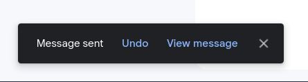
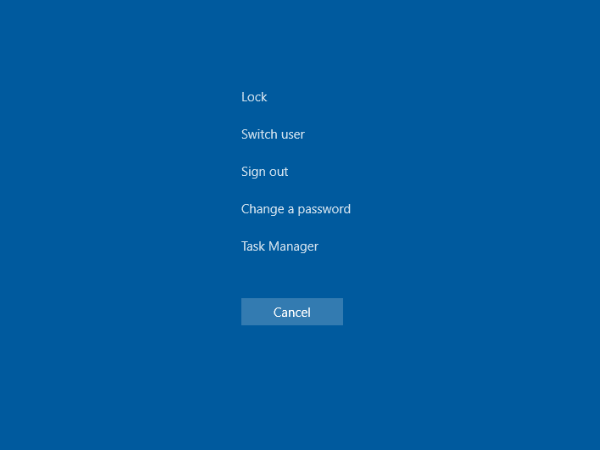
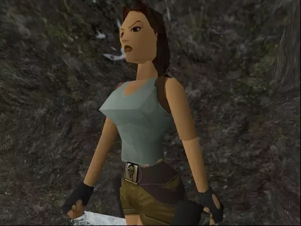
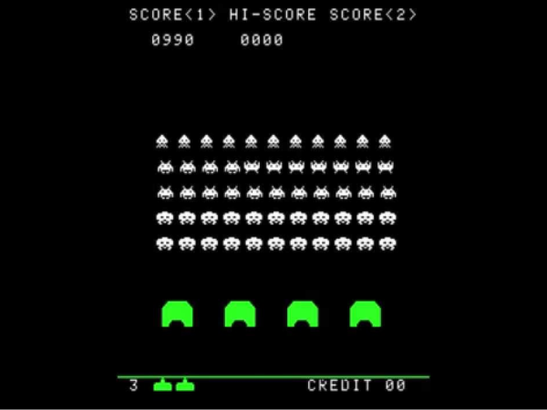
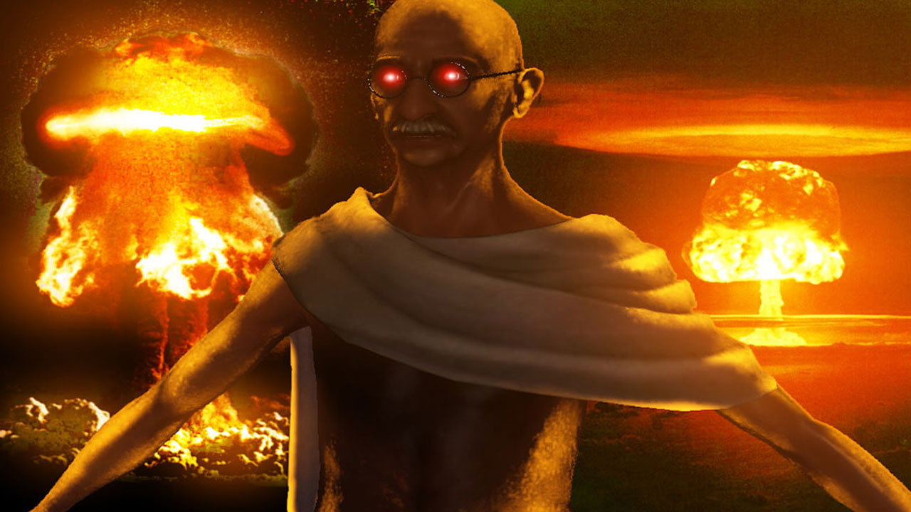

Hidden files in Linux
If you've ever worked on Linux systems, you're probably know, that files whose names start with dot - are called hidden and they don't show up in directory listing.
Gmail Undo email feature
After clicking the send button in gmail you have some time to stop the operation. This is an example of a clever solution for a problem. Gmail has a 5 second delay when processing an email message. And developers turned this issue into a feature by implementing an undo option. The message processing service displays an "undo" button and lets you stop this email from being sent. That feature became so popular that other mail services implemented this as well.
Fog in Silent Hill
When Silent Hill first came out, game consoles weren’t powerful enough to render the whole town of Silent Hill. For
improving performance, the game rendered only close to player objects.
The problem was that it created the unwanted effect of buildings and trees just popping into existence as the player
walked in their direction. The developers solved this problem by covering the whole town in a thick fog hiding areas
beyond the player’s vision.
In later versions of the game, consoles got much better graphic cards, and this “trick” became unnecessary, but by that
time the fog became such an integral part of Silent Hill that the developers had no choice but to leave it in.
Windows Ctrl+Alt+Delete
If you are using Windows you probably know about the Ctrl-Alt-Delete shortcut that gives quick access to important system operations like rebooting the system and task manager. That trick can be used when some applications freeze and can’t be closed in the proper way. This keyword is not entirely a bug, it works as expected, but it is never meant to be in production. Firstly it was used only by programmers during the development process and they simply forgot to remove it in release. Now this is a well known solution to lags on Windows.
Busty Lara Croft
While making Lara Croft’s girlish figure for the game Tomb Raider, the designer had a slip of his mouse which turned an intended 50 percent increase to her breast size into a 150 percent gain. Other team members were watching him do this and before he could press Ctrl + Z, there was instant approval from the team to keep it.
Space Invaders enemies increasing speed
Space Invaders was one of the first popular arcade games. You’re supposed to shout enemies coming from top of the screen. When you shout more and more enemies their speed increases, making the game harder. But it wasn’t meant to be. Speed of enemies was supposed to be constant, but computers at the time didn’t have enough resources to run this game properly and slow enemies were caused by lack of performance. As you killed more and more enemies, the memory was freed and the game started running at the correct speed.
Civilization angry Gandhi
In game Civilization were different leaders controlled by computers. Gandhi was meant to be the most peaceful leader. Aggression was defined as integer, where Gandhi had lowest - 0 points. One of the game mechanics reduced aggression by one point after accepting democracy. And it is supposed to make all leaders less aggressive, but not with Gandhi. His aggression instead of setting to -1 actually set to the highest possible value 255 because of integer overflow. And it makes Gandhi way more aggressive than any other leader in the game and he starts to attack other civilizations with nuclear weapons.
